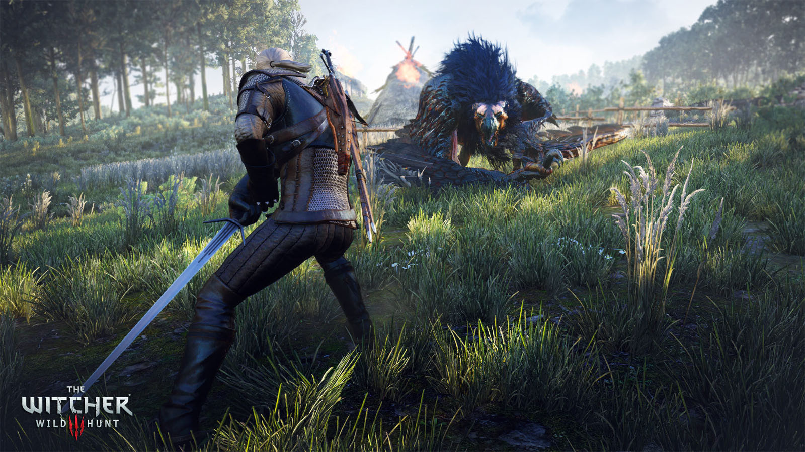
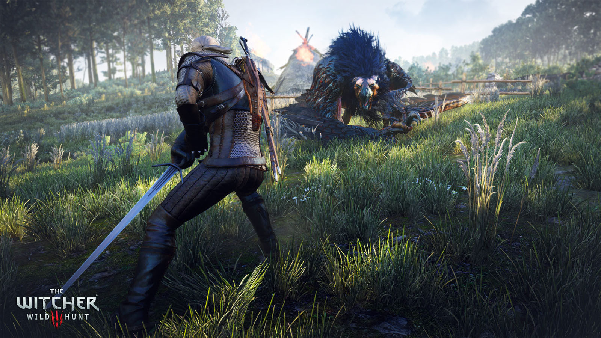

The Witcher: Wild Hunt es un juego de rol de mundo abierto de nueva generación con una apasionante trama, ambientado en un espectacular universo de fantasía lleno de decisiones trascendentales y consecuencias impactantes. En The Witcher encarnas a Geralt de Rivia, un cazador de monstruos profesional que tiene que encontrar a la muchacha protagonista de una profecía en un amplio mundo abierto y rebosante de ciudades comerciales, islas con piratas vikingos, peligrosos puertos de montaña y cuevas olvidadas.
| Minímo: | Recomendado: | |
|---|---|---|
| S.O: | 64-bit Windows 7, 64-bit Windows 8 (8.1) or 64-bit Windows 10 | 64-bit Windows 7, 64-bit Windows 8 (8.1) or 64-bit Windows 10 |
| Procesador: | Intel CPU Core i5-2500K 3.3GHz / AMD CPU Phenom II X4 940 | Intel CPU Core i7 3770 3.4 GHz / AMD CPU AMD FX-8350 4 GHz |
| Memoria: | 6 GB de RAM | 8 GB de RAM |
| Gráficos: | Nvidia GPU GeForce GTX 660 / AMD GPU Radeon HD 7870 | Nvidia GPU GeForce GTX 770 / AMD GPU Radeon R9 290 |
| Almacenamiento: | 35 GB de espacio disponible | 35 GB de espacio disponible |